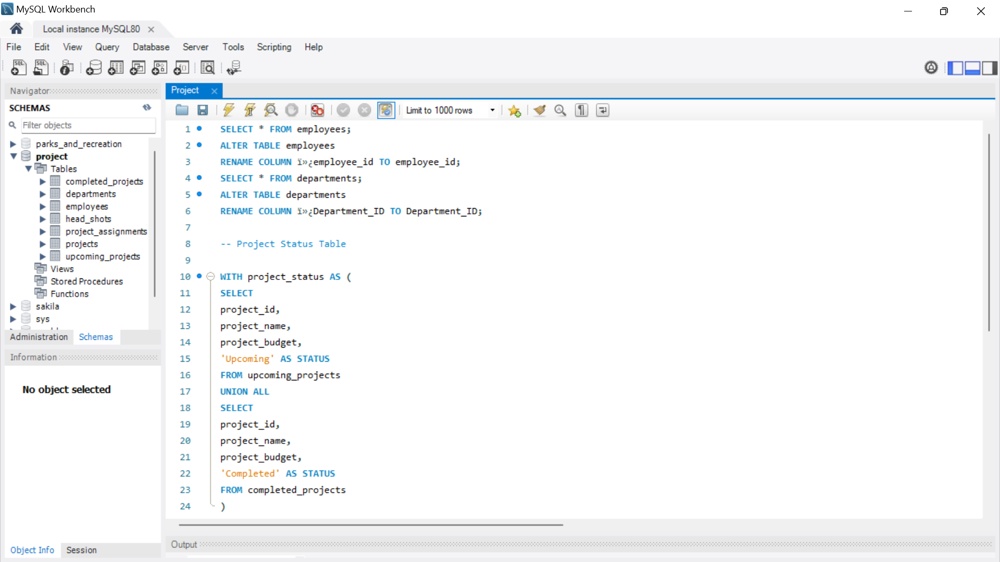
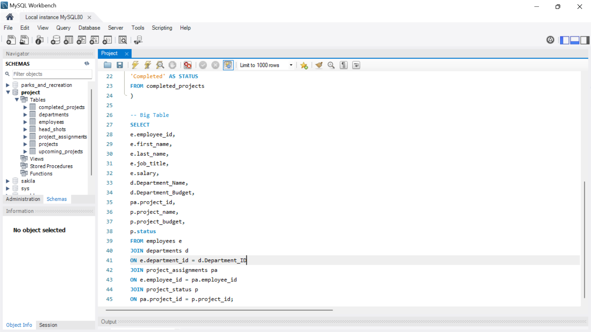
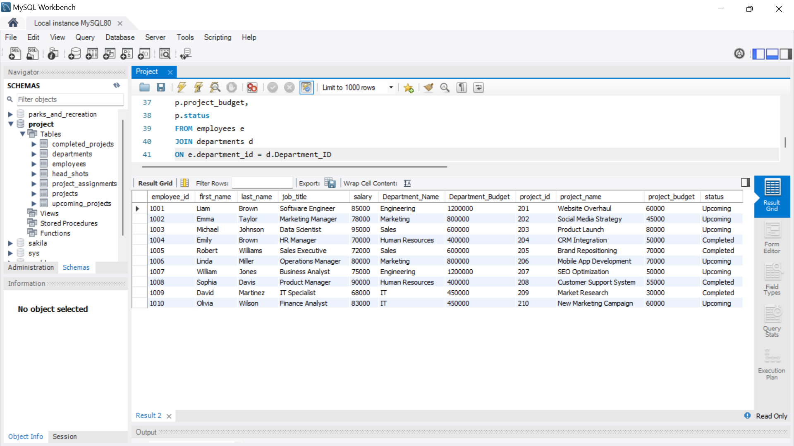

PROJECT RISK ANALYSIS AND DATA VISUALISATION
WITH POWERBI
AND MYSQL
We were provided with seven (7) datasets to analyse based on the requirements provided. The datasets were analysed and cleaned with MYSQL, using SQL queries and function to join the datasets together as one for easy visualization.
fig 1. SQL Queries
fig 2. SQL Join Operation
fig 3. SQL Result Table
The resulted dataset was connected to PowerBI and further analysed and explored in PowerBI. A well visualized report dashboard was created from the dataset as shown in the image below.

fig 4. PowerBI Report
The dashboard consist of the the following insights: Indidvidual staff, Project Budget, Project distribution, Department goals etc. As shown in the figure above.